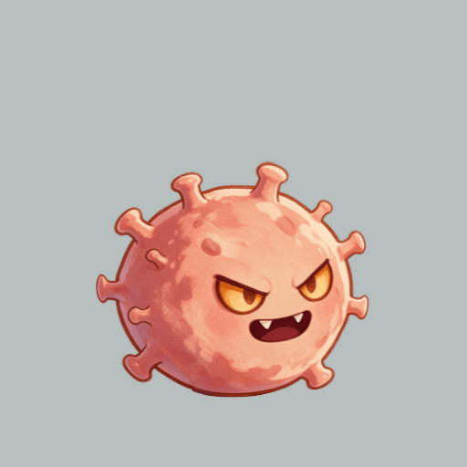
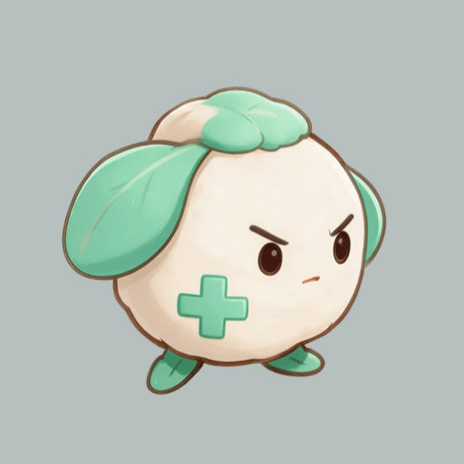
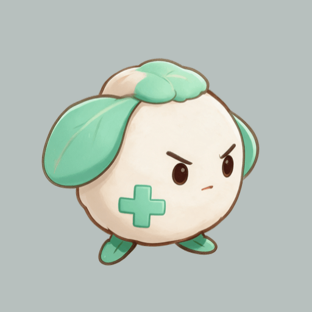
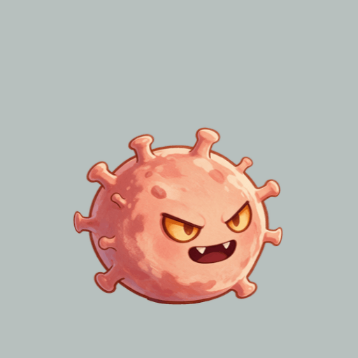

<!doctype html><html lang="zh-CN"><meta charset="utf-8"><title>Basic / Immune motion candidates</title><style>body{margin:0;background:#252b2c;color:#ecf0ed;font:15px system-ui}main{display:flex;flex-wrap:wrap;gap:16px;padding:18px}figure{margin:0}img{width:384px;height:384px;display:block;background:#b7c0be}figcaption{padding:8px 0}header{padding:14px 20px;background:#182021}small{color:#b8c7c0}</style><header>Basic / Immune — pixel-derived local rig candidates <small>512 logical canvas · alpha runtime PNGs · QA background only</small></header><main><figure><figcaption>Basic walk — 4×140ms</figcaption></figure><figure><figcaption>Immune crawl — 4×140ms · alternating contact</figcaption></figure><figure><figcaption>Immune bite — preload / open / lunge / recover</figcaption></figure><figure><figcaption>Basic windup — 2 keyposes</figcaption></figure></main></html>
